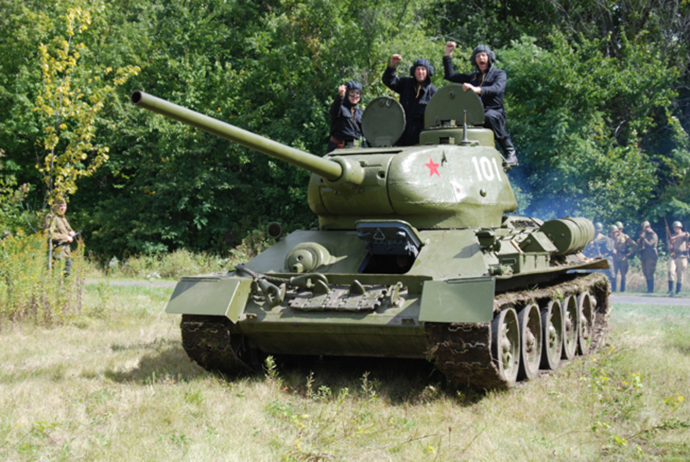

SSSR u Drugom svjetskom ratu
U trenutku izbijanja Drugog svjetskog rata Sovjetski savez je bio svjetska velesila. Samo s 12000 primjeraka tenka T-26 1940. godine on je imao više tenkova nego sve druge tadašnje velesile zajedno. Ta činjenica je bila 1941. godine ujedno primjer snage i slabosti komunističkog carstva pošto su ti tenkovi početkom rata bili zbog svoje zastarjelosti više teret nego korist. Drugi problem Crvene armije su bile krvave Staljinove čistke koje su uništile časnički kor oklopnih divizija postavivši na njihov vrh političke podobne, ali vojno nesposobne zapovjednike.
Ako radi...radi...
T-34 - oznaka je za sovjetski tenk iz Drugog svjetskog rata koji je mnogo puta bio naglašavan kao najbolji i najutjecajniji tenk iz tog razdoblja. Prvi primjerci izašli su iz tvornice HKBM koja je bila smještena u Ukrajini. Tenk T-34 tvorio je temelj sovjetskih oklopnih snaga kroz cijeli Drugi svjetski rat i poslije. Mnoge oružane snage koristile su T-34, i zbog svoje rasprostranjenosti bio je korišten u bojne svrhe sve do kasnih devedesetih godina 20. stoljeća.
